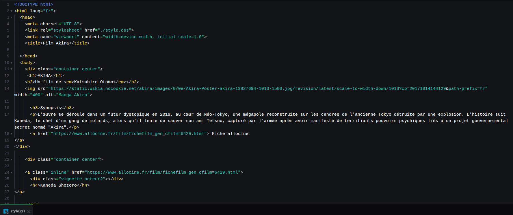
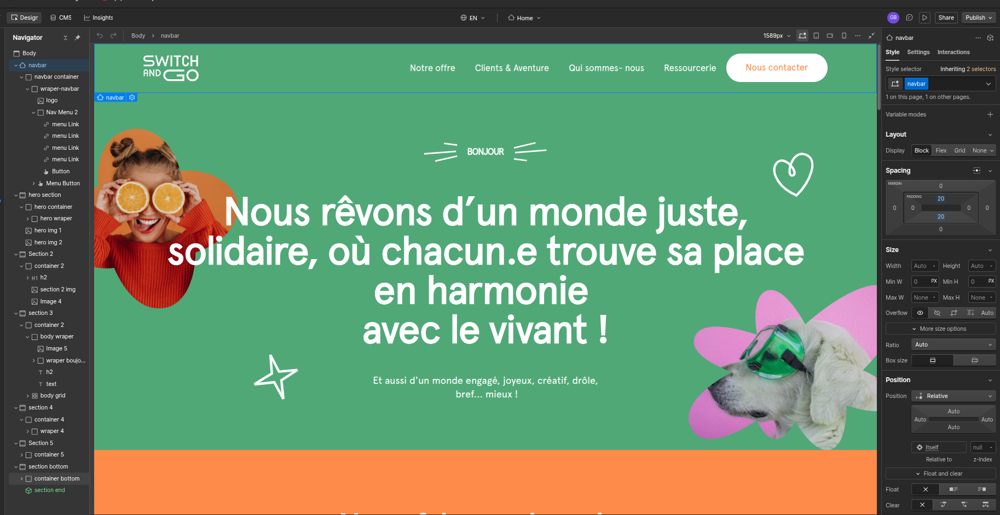
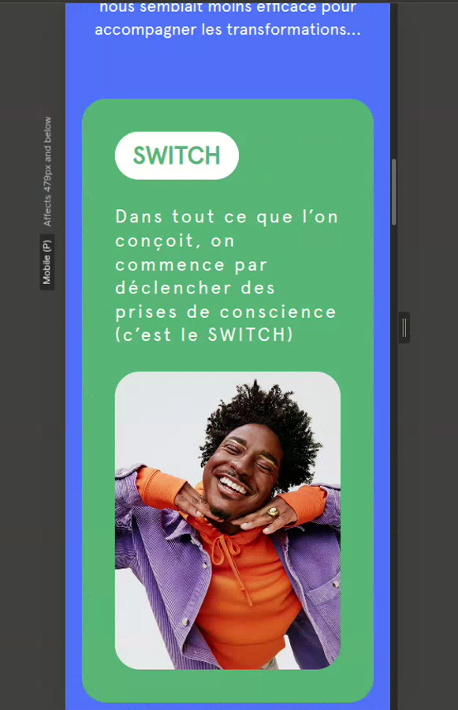

<< TOUTES LES SEMAINES
01
Ce que j'ai appris
- Le HTML pour structurer une page (titres, textes, images, liens) et le CSS pour la mettre en forme.
- Webflow : les mêmes principes, mais en visuel. Le panneau « Navigator » c'est le HTML, le panneau « Style » c'est le CSS.
- Le responsive : un site qui s'adapte à l'ordinateur, la tablette et le téléphone.
02
Ce que j'ai construit
- Une page hommage au film Akira, codée entièrement à la main en HTML et CSS : synopsis, fiches personnages, filmographie.
- La reproduction d'un site vitrine complet dans Webflow (un exercice de la formation), en version ordinateur et mobile.
03
Ce qui a coincé
- Rien de bloquant : c'était surtout de la prise en main des outils.
04
La suite
- Airtable, puis Make : la partie données et automatisation, celle qui m'intéresse le plus.
En images

// Le code HTML de la page Akira

// Le même travail, en visuel dans Webflow

// La version mobile du site